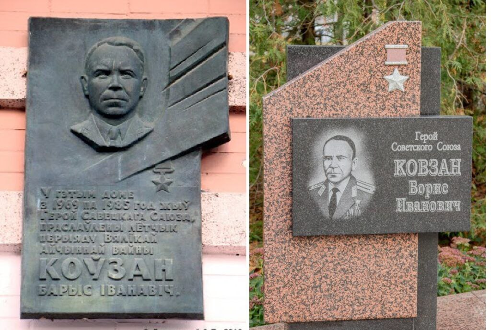

Увековечение памяти
 Подвиг Бориса Ивановича Ковзана и его уникальная судьба не забыты. Память о нем бережно хранится и увековечена в различных формах.
Мемориальные доски:
- В Минске, на фасаде дома по улице Романовская Слобода, дом 26, где Борис Ковзан проживал с 1969 по 1985 год, установлена мемориальная доска.
- В Рязани, на доме, где он жил, также установлена мемориальная доска (в 2005 году).
- В Бобруйске, на здании аэроклуба, его имя увековечено на мемориальной доске в числе четырех Героев Советского Союза – выпускников этого аэроклуба.
Улицы и объекты, названные в его честь:
- Именем Бориса Ковзана названа улица в Бобруйске.
- Имя Б. И. Ковзана присвоено средней школе № 1 г. Бобруйска.
Памятники и обелиски:
- В Бобруйске на Аллее Героев, расположенной на площади Победы, выгравировано его имя и установлен памятник (стела).
- На новгородской земле, у шоссе Москва – Санкт-Петербург, близ города Крестцы, возведен памятный обелиск, увенчанный силуэтом самолета-истребителя. На обелиске высечены имена трех Героев Советского Союза, воевавших в составе 6-й воздушной армии, включая Бориса Ковзана.
Музеи и экспозиции:
- В фондах Белорусского государственного музея истории Великой Отечественной войны хранятся фронтовые письма Бориса Ковзана и его воспоминания. Его имя также золотыми буквами выбито в Зале Победы этого музея.
- В Бобруйском краеведческом музее экспонируется крыло модели самолета, сделанное Борисом Ковзаном в школьные годы.
Другие формы памяти:
- В 2014 году в России была выпущена почтовая марка, посвященная подвигу Бориса Ковзана.
- О его жизни и подвигах написаны книги и многочисленные статьи.
Эти знаки памяти помогают сохранить историю о выдающемся летчике для будущих поколений.